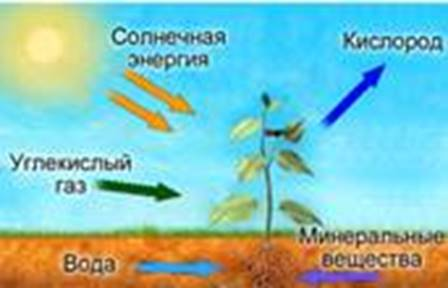
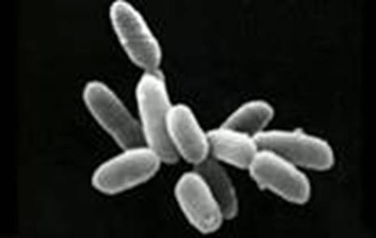
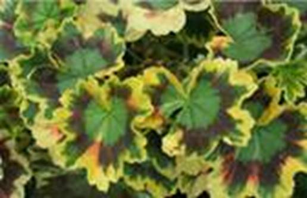
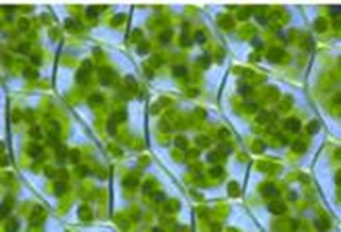
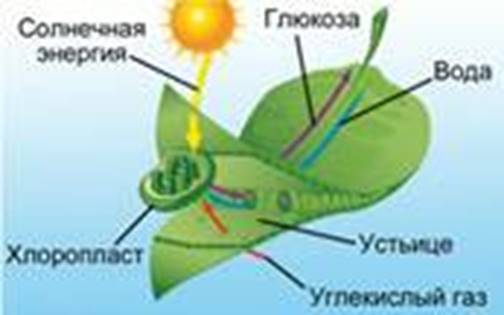
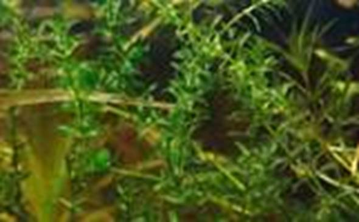

При росте растения в почве его масса увеличивается сильнее, чем уменьшается масса почвы. Это объясняется тем, что растения самы способны к синтезу органических веществ из углекислого газа и воды.
Фотосинтез (см. Рис. 1) – синтез органических веществ из углекислого газа и воды с использованием энергии света. Это одна из важнейших способностей растений. Благодаря фотосинтезу, растения обеспечивают энергией не только себя, но и другие организмы (животные, грибы). Это связано с тем, что растения находятся в начале любой пищевой цепочки.

Рис. 1. Схема фотосинтеза
Организмы, способные к фотосинтезу
Помимо растений, к фотосинтезу способны и некоторые бактерии. Например, галобактерии (см. Рис. 2) используют примитивный путь фотосинтеза, при котором не выделяется кислорода.

Рис. 2. Галобактерии
То же самое происходит у зеленых и пурпурных бактерий. Цианобактерии в ходе фотосинтеза выделяют кислород.
Если взять растение и поставить его на 3 суток в темное место, то из листков уйдут все питательные вещества. Далее это растение необходимо вынуть на свет и поместить один из листьев в черный конверт с отверстием определенной формы. Через 8-10 часов пребывания растения на свету необходимо отрезать 2 листа, один из которых был в конверте. Поместить их в кипящую воду, а затем в спирт. Когда спирт окрасится в зеленый цвет, а листья полностью обесцветятся, необходимо их вынуть и расправить на тарелке. При обливании обоих листьев йодом на листе из конверта появится синяя фигура, соответствующая отверстию конверта. А обычный лист посинеет полностью.
Это произойдет по причине накопления крахмала, в виде которого растительный организм накапливает глюкозу. Крахмал – сложная молекула, не растворимая в воде. При необходимости транспортировки в другие органы растения, крахмал снова превращается в глюкозу.
Если растение с пестрыми листьями (герань окаймленная (см. Рис. 3)) поставить на яркий солнечный свет, и через несколько часов срезать, обесцветить и окрасить йодом несколько листьев, то белые полосы останутся белыми.

Рис. 3. Герань окаймленная
Это происходит потому, что клетки зеленых частей растения содержат хлоропласты (см. Рис. 4), содержащие зеленый пигмент хлорофилл. Хлорофилл поглощает и запасает энергию солнечных лучей.

Рис. 4. Клетки зеленых частей растения
В пластидах белых частей растения нет хлорофилла, в связи с чем крахмал там не образуется.
Опыт: необходимо взять стекло, на котором под стеклянным колпаком выставить веточку растения. Смазать края колпака вазелином, что предотвратит попадание воздуха. Рядом с растением под колпак поставить сосуд с едкой щелочью (вещество, хорошо реагирующее с углекислым газом, поглощая его). Таким образом, щелочь поглотит углекислый газ. Через 2 дня можно снять колпак с растения. И проверить наличие крахмала в его листьях – он будет отсутствовать.
Таким образом, крахмал образуется в листьях только при наличии углекислого газа и только на свету. Для образования глюкозы (см. Рис. 5) растению необходимы углекислый газ, который оно получает через устьицы, и вода, которую оно получает из почвы.

Рис. 5. Схема образования глюкозы
Поглощение углекислого газа
Некоторые степные и пустынные растения днем держат все устьицы закрытыми (толстянки, кактусы), что связано с сильной жарой. Углекислый газ они поглощают ночью, и затем его запасают, чтобы днем использовать для синтеза глюкозы.
Зеленые растения – автотрофы, так как они синтезируют органические вещества из неорганических с использованием энергии солнечного света.
У растения существует 2 типа питания:
· Минеральное, обеспечивающее его неорганическими солями
· Фотосинтез, обеспечивающий его органическими веществами
Опыт: необходимо взять 2 банки, в каждую из которых положить сухой лед (замерзший углекислый газ). Закрыть банки. Когда они согреются, поместить в них по небольшому горшку с растением. Первую банку поставить на яркий солнечный свет, вторую – в темное место. Через сутки открыть обе банки, и в каждую опустить по горящей лучинке. В банке, стоявшей на солнце, лучинка ярко горит – там есть кислород. В банке, стоящей в темноте, лучинка гаснет – там нет кислорода.
Таким образом, растения выделяют кислород только на свету – в процессе фотосинтеза.
Ежегодно растения нашей планеты выделяют до 400 млрд тонн кислорода.
Опыт по теме «Фотосинтез»
Попробуйте получить изображение или текст на листе растения, используя опыт, данный в видеоуроке.
Налейте в банку воду, насыщенную углекислым газом. Поместите в нее побег элодеи (см. Рис. 6).

Рис. 6. Элодея канадская
Поставьте банку на яркий свет, наблюдайте за выделением газа веточками элодеи.
В результате фотосинтеза синтезируются глюкоза (которая затем может запасаться в виде крахмала) и кислород, который через устьица выходит в атмосферу.
Благодаря фотосинтезу запасается энергия солнечного света. Так, энергия, которую мы получаем, сжигая каменный уголь, – это энергия, в свое время запасенная в ходе фотосинтеза.
Список литературы
1. Биология. Бактерии, грибы, растения. 6 кл.: учеб. для общеобразоват. учреждений / В.В. Пасечник. – 14-е изд., стереотип. – М.: Дрофа, 2011. – 304 с.: ил.
2. Тихонова Е.Т., Романова Н.И. Биология, 6. – М.: Русское слово.
3. Исаева Т.А., Романова Н.И. Биология, 6. – М.: Русское слово.
Дополнительные рекомендованные ссылки на ресурсы сети Интернет
1. Elementy.ru (Источник).
2. Krugosvet.ru (Источник).
3. Bioaa.info (Источник).
Домашнее задание
1. Биология. Бактерии, грибы, растения. 6 кл.: учеб. для общеобразоват. учреждений / В.В. Пасечник. – 14-е изд., стереотип. – М.: Дрофа, 2011. – 304 с.: ил. – с. 165, задания и вопросы 1, 5, 6 (Источник).
2. Что такое фотосинтез?
3. Какие существуют типы питания у растений? Охарактеризуйте их.
4. * Узнайте, какой еще существует тип автотрофного питания, помимо фотосинтеза. Для каких организмов он характерен? По какой причине они используют не фотосинтез, а другой тип автотрофного питания?